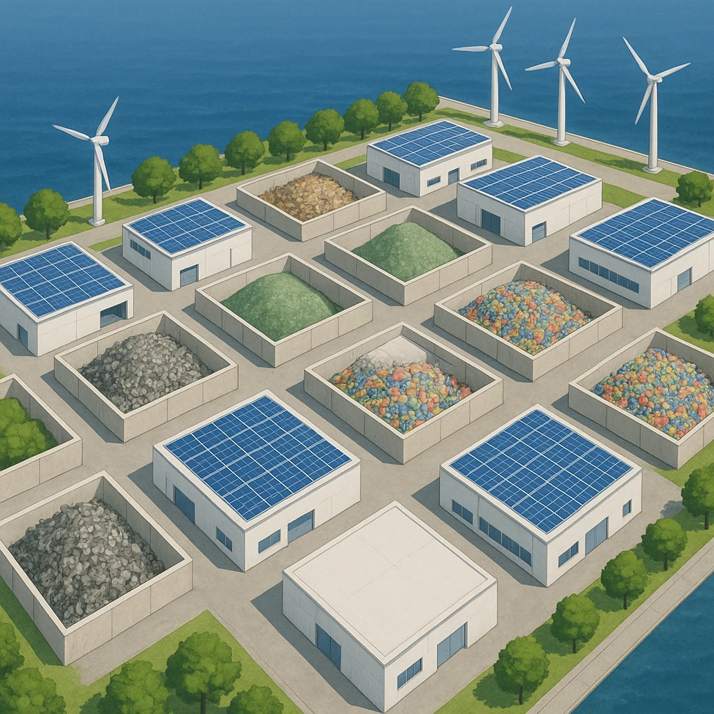

ノート3
世界の環境首都をめざす北九州市
公害の街から、
環境の街
へ
昔
北九州市は
金属工業
が盛んだった
そのぶん大気汚染や水質汚濁の公害にも苦しんだ
⑰
近年は廃棄物をリサイクルする工場を集めた
エコタウン
がつくられている
ごみを資源にもどす工場を1か所に集めた地区
⑱
資源を循環させ、未来によりよい社会を残す社会を
持続可能
な社会という
SDGsの考え方。北九州市は「環境首都」をめざす
まとめの一文
「北九州市は
公害
を克服し、①をつくって②な社会をめざしている。」

資源が「まわる」社会
つくる（生産）
つかう（消費）
すてる（廃棄）
リサイクル
＝⑰の工場
第13章 九州地方
SEED EDUCATION